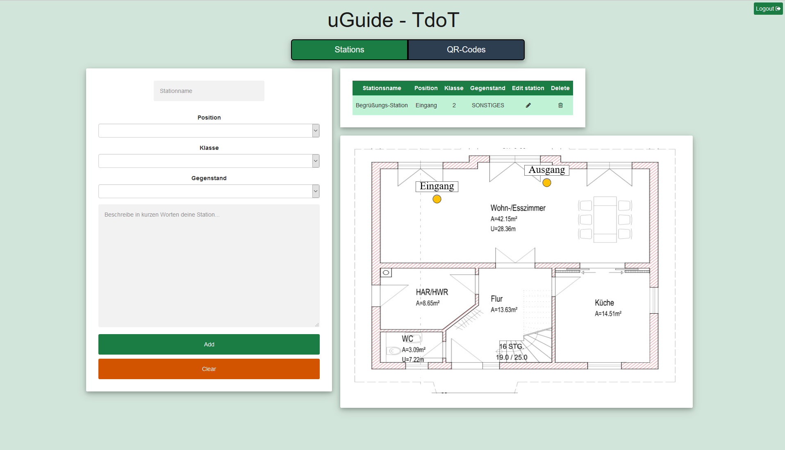

1.1 Station Edit View
Allgemeine Erklärung
Drei Komponenten sind Bestandteil dieser View:
-- Formular: Beim Formular ist man in der Lage neue Stationen hinzuzufügen und auch zu editieren.
-- Lageplan: Dient als Hilfe sich besser vorstellen zu können wo die jeweilige Position am Lageplan liegt.
-- Tabelle: Diese zeigt alle Stationen die mit diesem Account erstellt wurden.
Die Funktionalität wird in den nächsten Kapiteln erklärt.
